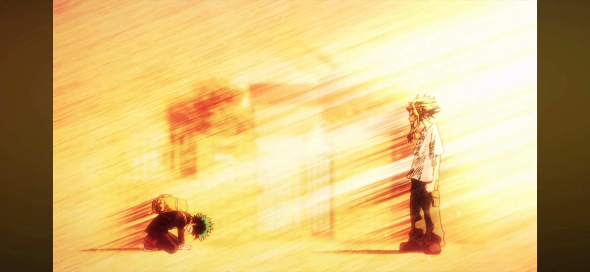

Interesting Japanese Anime
With each anime I hyperlinked the name so you can click and learn more.

This picture above shows an anime called "My Hero Academia(Also known as My Hero)." My Hero is known as one of the top 3 animes if the new gen era. In My Hero the main character(mc) is named Midoriya. Miooriya is a regular degular civilian with NO powers at all in a world full of superhumans. Even though he has no powers Midoriya wants to grow up and be a hero too.

This picture above shows another anime called "Gurren Lagann." Gurren Lagonn is an anime which is indeed on the older side BUT it is very inspirational and "peak" as the kids say. Gurren Lagann is a show about the mc Simone, and his future as part of Team Lagann. Team Lagann is filled with a bunch of smart, chraismatic, bold, and fun people.
I will have a table below that will show the differences I found between Gurren Lagann and My Hero Academia and I will look for these things
- Location
- Lesson
- Plot
- Power Scaling
- Characters
| Gurren Lagann | My Hero Academia | Both |
|---|---|---|
| Outside Earth, Mechs, New Generation. | Powers, Multiple MCs. | Life Lessons, Villians, Heros. |